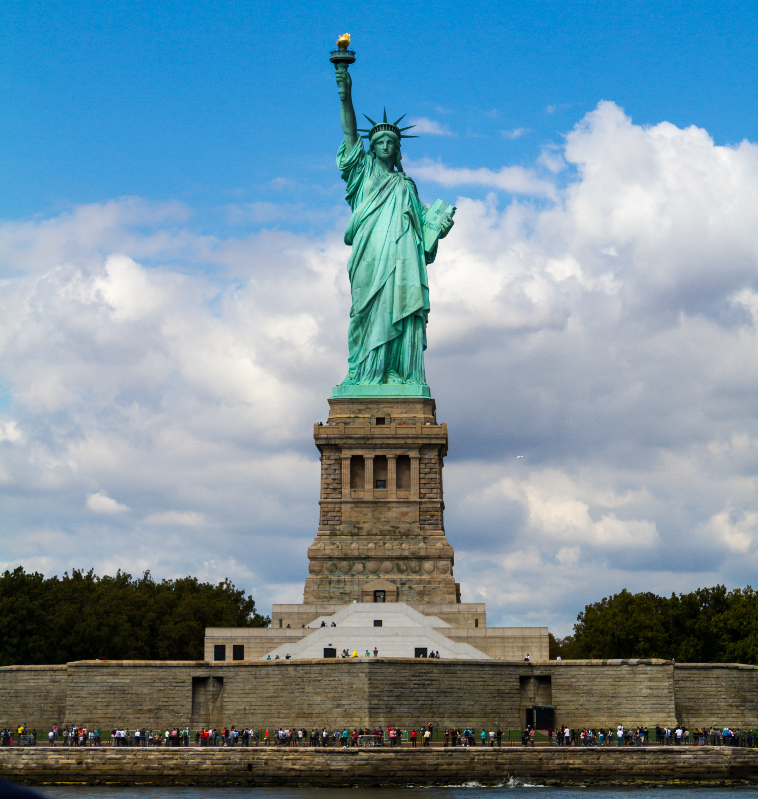
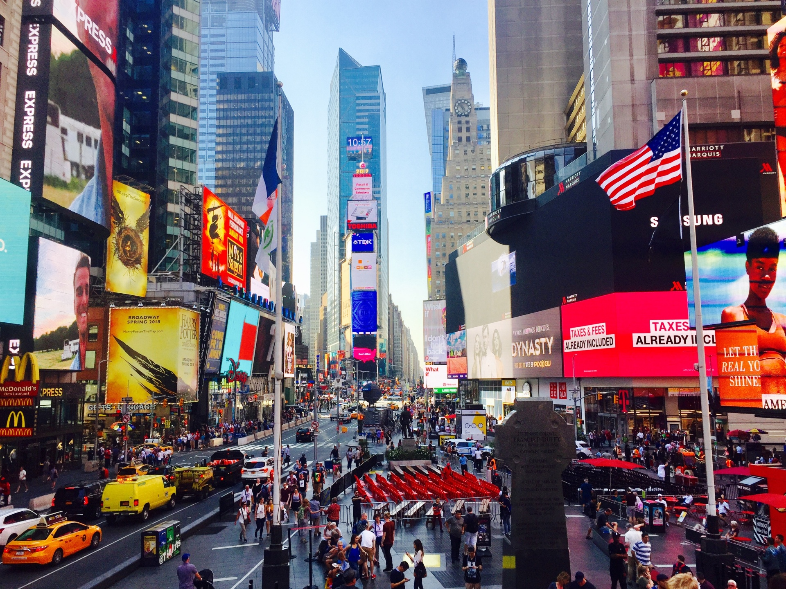

Top 4 Things to do in NYC:
Central Park:
If you want a place to relax, unwind, or hang out with friends and and family this is the perfect place. This park is located along 59th street to 110th street and stretches from Fifth avenue to Central park avenue. The parks offers events all year around. This park is accessible by the subway and bus systems, also by walking too.
Grand Central Terminal:
The Grand Central terminal, also known as the “Crown jewel," is New York City's number one train transportation system. The terminal is also connected to the subway and the bus system. But besides the trains and the very friendly staff, the Grand Central Terminal is so much more that! If you like shopping, visit one the 60 shops they have and then grab food or a coffee drink in the more than 35 cafes and dining areas. There are also special events that happen all year round, all under one roof. And if you like taking pictures, or capturing the moment, the Grand Central is a great place to take family photos, selfies, or photos of someone you love.

Statue of Liberty:
The Statue of Liberty was given to us by the people of France in the year of 1886. It was given to us as a symbol of friendship. Now, almost 90 years later, it has more symbolism as well. While it does still symbolize friendship, it now symbolizes democracy, freedom, hope and love. People who come and see this with their very own eyes will feel joy, happiness and some sort of gratitude.
Time Square:
Times Square is the heart of NYC and very accessible from the Grand Central Terminal. Here, you are surrounded by different cultures and people. If you are looking for a night out, to go shoping or just hang, Times Square is the place for you. 